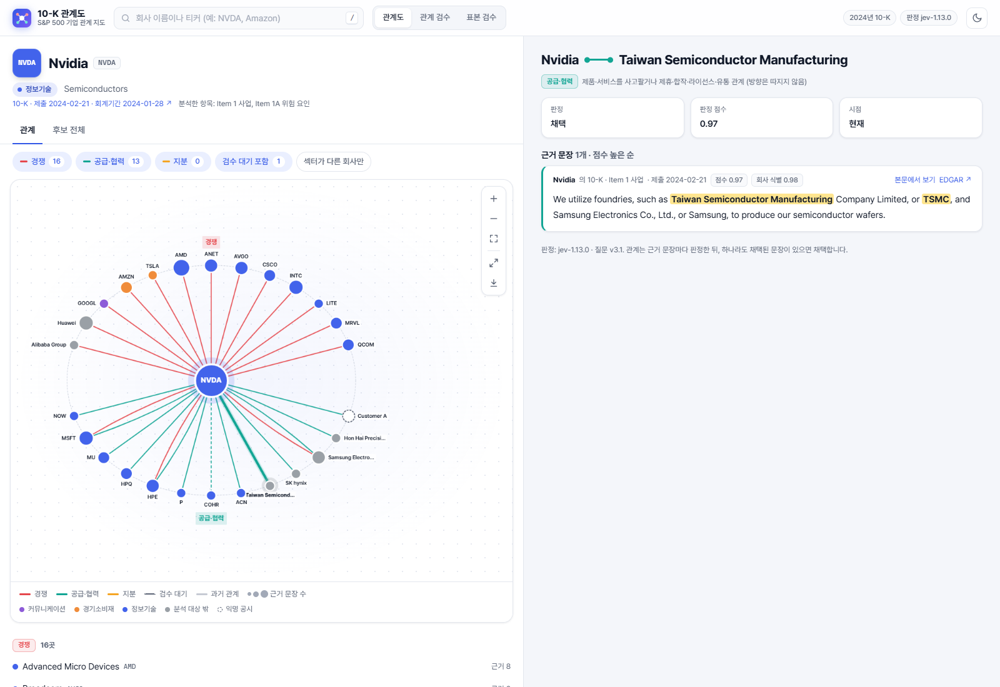
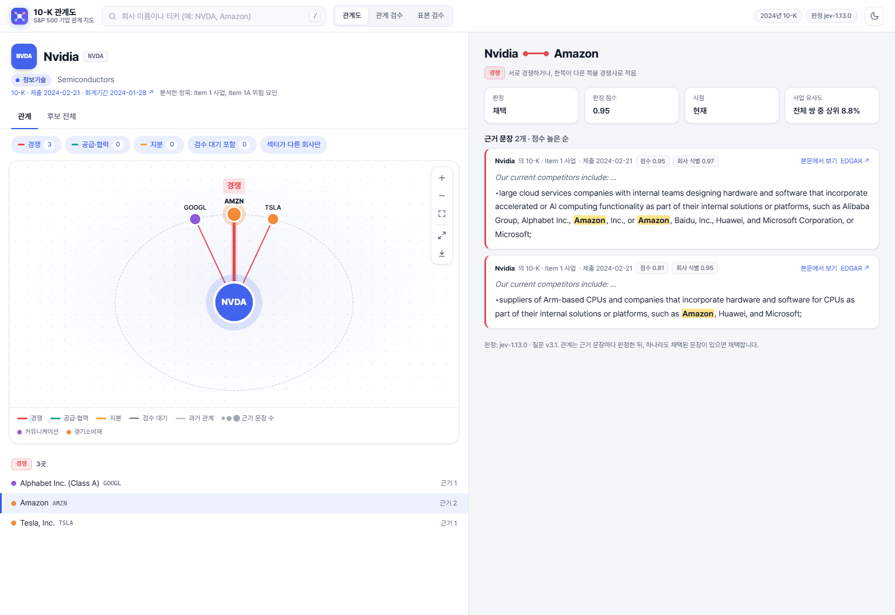
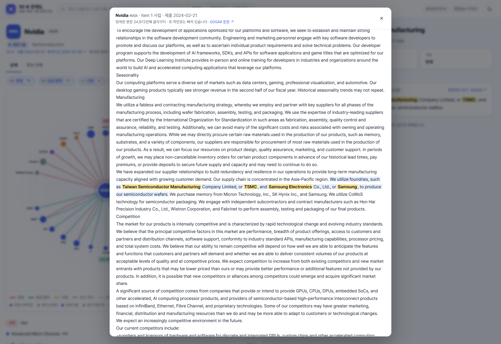

단어와 의미를 함께 비교
사업 설명(Item 1)에 TF-IDF·SBERT·OpenAI 임베딩을 적용했습니다. 임베딩의 평균 벡터를 제거하고, 서로 다른 척도의 유사도를 기업쌍 백분위로 바꿔 결합했습니다. 사업이 비슷한 기업 상위 20곳과 공시에 직접 등장한 기업을 함께 후보로 구성했습니다.
10-K REPORT SIMILARITY · 기업 관계 지도
산업 분류 너머의 사업 구조를 포착
S&P 500 기업의 10-K를 분석해 일반적인 산업분류로 잡아내기 어려운 경쟁·공급·협력 관계를 포착했습니다. 사업 설명의 유사도로 탐색 범위를 넓히고, 공시 문장에서 관계를 판정해 원문 근거와 함께 살펴보는 웹앱을 구축했습니다.

01 / PURPOSE
GICS·SIC는 기업을 업종별로 비교하는 출발점입니다. 그러나 서로 다른 업종의 고객과 공급사, 여러 사업 영역에서 만나는 경쟁사, 기술과 유통망을 공유하는 협력사를 분류표 하나로 읽기는 어렵습니다.
이 프로젝트는 산업분류로 드러나지 않는 기업 간 관계를 찾고, 그 연결을 설명하는 공시 근거를 제공하는 데 목적을 뒀습니다. 기업을 검색한 뒤 관계 지도를 탐색하고, 연결된 이유를 원문으로 확인하는 리서치 도구로 구현했습니다.
02 / DESIGN
SEC EDGAR 10-K
Item 1·1A 추출·품질 검사
TF-IDF + 임베딩
공시의 회사 이름 언급
회사 식별·주변 문맥 확인
유형별 판정과 근거 저장
기업 관계 그래프
원문 조회·사람의 검수
사업 설명(Item 1)에 TF-IDF·SBERT·OpenAI 임베딩을 적용했습니다. 임베딩의 평균 벡터를 제거하고, 서로 다른 척도의 유사도를 기업쌍 백분위로 바꿔 결합했습니다. 사업이 비슷한 기업 상위 20곳과 공시에 직접 등장한 기업을 함께 후보로 구성했습니다.
사업 설명이 비슷하다는 사실만으로 관계를 확정하지 않았습니다. Item 1·1A의 회사 이름과 앞뒤 문맥을 Jev 모델로 판정하고, 경쟁·공급·협력 등의 유형에 근거 문장을 연결했습니다. 회사 별칭과 분사 시점, 신용평가처럼 관계로 보지 않는 문맥도 처리했습니다.
판정 점수에 따라 채택·기각·검수 대상으로 구분하고, 사람이 근거를 읽고 판단을 기록하는 화면을 만들었습니다. 표본 검수에서는 모델 답을 가려 독립적으로 라벨을 붙이고, 개발 표본과 확인 표본을 나눠 경쟁·공급·협력 판정을 평가했습니다.
YAML 설정과 CLI로 수집·임베딩·판정·내보내기를 분리했습니다. 텍스트와 모델 입력별 캐시를 재사용하고, 관계 그래프와 검수 기록은 별도 데이터베이스에 저장해 그래프를 다시 생성해도 검수 결과가 보존되도록 했습니다.
03 / WEB APPLICATION
기업 검색, 유형별 관계 필터, 그래프 확대·저장, 근거 문장과 공시 본문 조회, 관계·표본 검수를 하나의 웹앱에 연결했습니다. 아래 이미지는 실행 중인 앱에서 직접 캡처한 화면이며, 각 이미지를 누르면 원본 크기로 볼 수 있습니다.
선의 색은 관계 유형, 점의 색은 GICS 섹터를 나타냅니다. 경쟁·공급·협력 관계와 서로 다른 섹터의 연결을 골라 볼 수 있습니다.
관계별 근거, 판정 점수, 제출일을 함께 표시합니다. 회사명이 강조된 문장에서 앞뒤 본문과 EDGAR 원문으로 이동합니다.
모호한 관계를 사람이 확인하고, 판정과 메모를 저장합니다. 공시 근거가 달라진 관계는 다시 확인할 수 있도록 구분합니다.


Python · edgartools · TF-IDF · Sentence-BERT · OpenAI Embeddings · Jev · FastAPI · React · TypeScript · Cytoscape.js · SQLite
04 / RESEARCH USE
산업분류를 출발점으로 삼되, 공통 사업·고객·공급망을 통해 연결된 기업까지 탐색 범위를 넓혔습니다. 분석가는 관계 그래프에서 비교 대상을 찾고, 각 연결을 설명하는 문장을 함께 검토할 수 있습니다.
공개된 10-K의 Item 1·1A를 바탕으로 구성한 지도입니다. 익명 고객과 분석 대상 밖 기업을 따로 표시하고, 모델 판정·사람의 검수·과거 관계를 구분했습니다.
기업을 업종 하나로 묶는 데서 나아가,
서로 어떻게 연결되는지 공시 근거와 함께 읽는 도구를 만들었습니다.
화면은 로컬 웹앱의 실제 실행 결과를 캡처했습니다. 수익률 동조성과 실적 발표 반응은 탐색 결과를 살펴보는 보조 분석으로 수행했습니다.